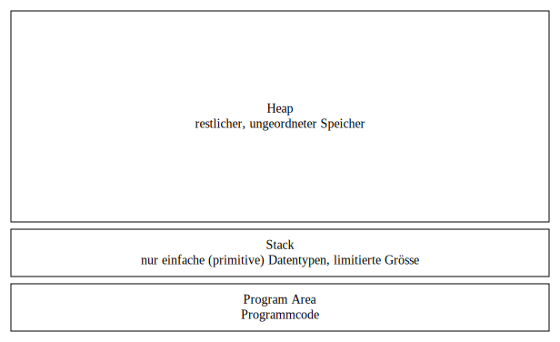
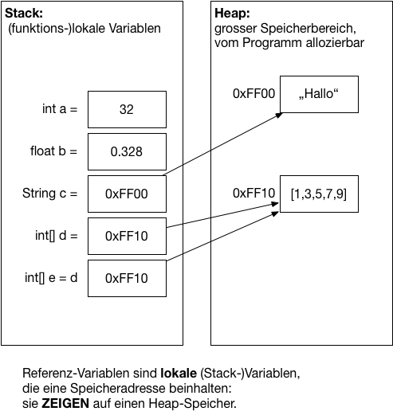

M411 - Algorithmen und Datenstrukturen
<i class="fas fa-graduation-cap"></i> Repetition Referenzen in Java ============================= **Zur Erinnerung:** Wir unterscheiden bei Programmen verschiedene **Speicherbereiche**: <div style="display: flex;">  <div> * der **Heap** ist der grosse, ungeordnete Speicherbereich. Hier kommen beliebige Datenstrukturen (Objekte) zu liegen. * Der **Stack** speichert einzelne, primitive Werte (Int, Boolean, Float) von Funktionen (**lokale Variablen**), und **Referenzen** / **Pointer** auf Objekte im Heap. * In der **Program Area** ist der Programmcode des laufenden Programms gespeichert. Mit diesem Bereich haben wir selten etwas zu tun. </div> </div> Wir unterscheiden also grob zwischen **Objekte im Heap** und **lokale, primitive Werte** auf dem Stack. Auch Referenzen sind "nur" primitive Werte auf dem Stack, welche aber als Pointer zu Objekten im Heap interpretiert werden.
<i class="fas fa-graduation-cap"></i> Repetition Referenzen in Java =============================  Java-Referenzen sind das Pendant zu C-Pointer: Sie zeigen auf einen Speicherbereich, wo das eingentliche Datenobjekt "sitzt".
<i class="fas fa-graduation-cap"></i> Repetition Referenzen in Java ============================= Java-Referenzen sind das Pendant zu C-Pointer: Sie zeigen auf einen Speicherbereich, wo das eingentliche Datenobjekt "sitzt". Referenzen in Java werden immer dann verwendet, wenn ein Objekt mit **`new`** erzeugt wird: ```java // Die Variable 'a' ist eine Referenzvariable: Sie referenziert ein Objekt vom Typ String: String a = new String("Hallo"); ``` Der **Inhalt** der Variable `a` ist somit __kein__ String-Objekt, sonder nur die __Referenz__ auf ein String-Objekt! Dieses Konzept ist ähnlich wie C-Pointer. Ebenso werden bei Aufruf einer Funktion die Referenzen, NICHT das Objekt übergeben: ```java // Die Funktion nimmt eine Referenz vom Typ String entgegen: public void print(String str) { System.out.println(str); } String a = new String("Hallo"); print(a); // Es wird die Referenz auf das String-Objekt übergeben ``` Ebenso bei der Zuweisung von Variablen: ```java String a = new String("Hallo"); // Der Variablen b wird nur die Referenz von a zugewiesen! String b = a; ```
<i class="fas fa-graduation-cap"></i> Repetition Referenzen in Java ============================= Genau gleich verhält es sich mit Arrays: ```java // Neuer Array wird im Heap erzeugt, und die Referenz darauf im Stack in der Variablen a gespeichert: int[] a = {1,2,3,4,5}; // Der Variablen b wird dieselbe Referenz wie a zugewiesen: Der Wert von a ist eine Referenz: int[] b = a; // somit verändern wir dasselbe Objekt, da b dieselbe Referenz enthält: b[3] = 42; System.out.println(a[3]); // 42 ``` **Anders** ist es bei einfachen (primitiven) Datentypen: ```java int a = 5; int b = a; // Der Wert von a ist keine Referenz, sondern die Zahl 5. b = 42; // System.out.println(a); // 5 ``` Der Wert von einfachen Datentypen sind nicht Referenzen, sondern ganz einfach der Wert. Die **einzigen** einfache Datentypen in Java sind Zahlen-Datentypen. **Alles andere sind Referenz-Typen**. Die **einzigen Werte**, die auf dem Stack landen, sind somit folgende Typen: * int/long (ganzzalige Werte, 32- resp. 64bit) * float/double (Gleitkomma-Zahlen, 32- resp. 64bit) * char/byte/short (ganzzahlige werte resp. Zeichen, 8 bis 16bit) * boolean * Referenzen (aka Pointer)
<i class="fas fa-graduation-cap"></i> Repetition Referenzen in Java ============================= Lösen Sie die **Aufgaben zu Referenzen** auf Moodle, Lektion 1 (Hausaufgabe auf nächstes Mal)